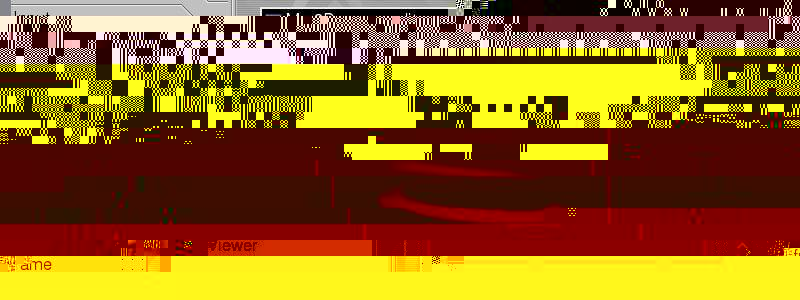

Unix systems
Unix systems
Mac OS X
Unix systems
Unix systems
Mac OS XlibQGLViewer-#VERSION#/QGLViewer folder.
QGLViewer.pro and "build all".
cd path/to/libQGLViewer-#VERSION#/QGLViewer qmake -spec macx-xcode
makecd path/to/libQGLViewer-#VERSION#/QGLViewer qmake -spec macx-g++ makeSee the Linux section for details and install paths customization.
Install the libQGLViewer designer plugin to easily create user interfaces that integrate a QGLViewer using designer.
make install to install the documentation in /Developer/Documentation/QGLViewer.
A Framework is created by default. Uncomment a line in QGLViewer.pro if you want to create a .dylib instead.
libQGLViewer-#VERSION#/QGLViewer folder.
tar -xzf libQGLViewer-#VERSION#.tar.gz cd libQGLViewer-#VERSION#/QGLViewer
QGLViewer.pro and "build all". Optionaly make install to install the application system wide.
makeqmake (see options below) make sudo make install [optional]The following files are installed (you need root privileges to
install, since these are system directories):
libQGLViewer-#VERSION#.so) in /usr/lib/usr/include/QGLViewer/usr/share/doc/QGLViewerqmake parameters let you customize your make install target installation directories:
qmake [PREFIX=...] [INCLUDE_DIR=...] [LIB_DIR=...] [DOC_DIR=...] [QGLVIEWER_STATIC=yes] [NO_QT_VERSION_SUFFIX=yes]A typical usage would be
qmake PREFIX=$HOME. Default values are:
- Param - - Default value - PREFIX /usr LIB_DIR PREFIX/lib INCLUDE_DIR PREFIX/include DOC_DIR PREFIX/share/docThe
QGLVIEWER_STATIC=yes option will compile a static version of the library.
glut library: uncomment
a line in QGLViewer.pro as explained there. glut can be installed from the freeglut-devel rpm or using apt-get
install libglut3-dev.
You may also want to install the libQGLViewer designer plugin to easily create user interfaces that integrate a QGLViewer using designer.
dev development package.
You can also directly download it.
Try to compile a simple Qt example and check the Qt FAQ page in case of problems. Consider compiling one of the Qt OpenGL examples to test your configuration.
Display
Widgets tab:

When added to your interface, the widget displays the standard spiral, which can be manipulated when you test it. All the viewers' signals and slots are available and can be connected to your interface.
Edit the qglviewerPlugin code as indicated to create a similar designer plugin for your
derived QGLViewer class.
cd designerPlugin qmake make make installThe
designerPlugin directory is located in the tarball root directory or in
/usr/include/QGLViewer/designerPlugin if you installed QGLViewer from the RPM.
By default, the plugin is installed in $QTDIR/plugins/designer which is usually a system
directory. The make install step hence requires root privileges. With Qt4, you can
customize the plugin installation path using the qmake PREFIX=... syntax instead. Do
not forget to add this path to your QT_PLUGIN_PATH variable so that designer can find
the plugin.
libQGLViewer.so needs to be found by designer in order to load
the plugin. If you didn't make install the library, add the path to the .so (resp
.dylib with Mac) in your LD_LIBRARY_PATH (resp. DYLD_LIBRARY_PATH)
as explained in the Qt installation sections above.
See the interface example for an illustration of a Qt user
interface that includes a QGLViewer.
qtObsolete conflicts with previous declaration: error
message. See the mac example section.version="..." in the first line of the ui file.libQGLViewer.so in your LD_LIBRARY_PATH (see above).QGLViewer.pro, replace release by debug in the
CONFIG line, and re-compile.qvaluevector.h while
compiling keyFrameInterpolator.cpp: include frame.h (see top of
keyFrameInterpolator.cpp).translate and rotate in Frame.h. Simply comment the
const versions of these methods.QMAKE_COPY_FILE modification in QGLViewer.proQString: uncomment the patch in
config.hthread in the
CONFIG line of QGLViewer.pro and re-compile.QMAKE_CXXFLAGS *= -fexceptions in QGLViewer.pro.Please let me know if you encounter specific installation problems.

 Last modified on #DATE#.
Last modified on #DATE#.